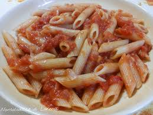

Penne al pomodoro
Ingredienti
Di seguito riportiamo gli ingredienti per preparare il nostro piatto
- Penne rigate 400 g
- Passata di pomodoro 350 ml • 21 kcal
- Aglio 1 spicchio • 79 kcal
- Olio extravergine di oliva q.b. • 29 kcal
- Sale marino q.b. • 286 kcal
- Basilico q.b. • 15 kcal
- Parmiggiano reggiano grattuggiato q.b. • 21 kcal
Prepazione
Per la preparazione potete utilizzare la passata di pomodoro, per un sugo più vellutato, oppure dei pomodorini o i pomodori pelati, in base a ciò che avete in casa e ai gusti personali. Vi basterà imbiondire l'aglio o la cipolla in una padella con olio extravergine d'oliva, versare poi il pomodoro facendo cuocere per una ventina di minuti e poi versarlo direttamente sulla pasta cotta al dente oppure mantecando il tutto in padella, infine aromatizzate con qualche foglia di basilico per rendere il piatto profumato e ancora più gustoso.
- Scaldate in padella l'olio d'oliva, l'aglio e le erbe aromatiche (escluso il basilico), lasciate ammorbidire l'aglio e aggiungete i pomodori mescolandoli al condimento
- Fate sobbollire il sugo a fuoco lento per 20 minuti o comunque finché il sugo non diventa denso, avendo cura di mescolare di tanto in tanto per evitare che si attacchi
- Cuocete la pasta al dente in una pentola colma d'acqua bollente e salata per il tempo indicato sulla confezione, scolatela al dente e versatela nei piatti
- Aggiungete il basilico al sugo e usate la salsa per condire la pasta insieme al parmigiano grattugiato, gustandola ben calda
- Servire il piatto